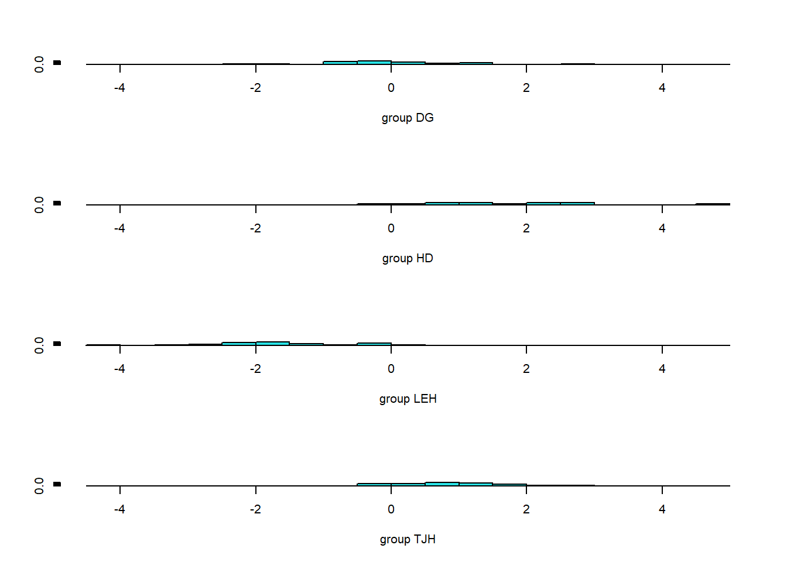

illness <- read.csv("https://docs.google.com/spreadsheets/d/e/2PACX-1vRlcjpU0XHfXF1WId1C5ZYX0YdY53KI9Nv91_tNCMj4z4iTjr-XMW1L_Ln8j3ahk5GUPZy4kGzSlA96/pub?gid=1322236994&single=true&output=csv",
stringsAsFactors = T)Multivariate methods
Remember you should
- add code chunks by clicking the Insert Chunk button on the toolbar or by pressing Ctrl+Alt+I to answer the questions!
- use visual mode or render your file to produce a version that you can see!
- render your file to make sure it runs (and that you haven’t been working out of order)
- save your work often
- commit it via git!
- push updates to github
- A pharmaceutical company has a drug that may help an illness that causes fever (temperature in degrees Celsius), blood pressures, and “aches” (scored on an index). Data is collected for several patients. To determine if the drug actually helps, test for differences in multivariate means for the fever, pressure and aches column, against the grouping variable treatment.
We will test the multiple outcomes using a MANOVA. This tests the null hypothesis that there is no difference in the vector of mean parameters for the groups.
m <- manova(cbind(fever,pressure,aches)~treatment, illness)
summary(m) Df Pillai approx F num Df den Df Pr(>F)
treatment 1 0.55466 14.115 3 34 3.857e-06 ***
Residuals 36
---
Signif. codes: 0 '***' 0.001 '**' 0.01 '*' 0.05 '.' 0.1 ' ' 1The MANOVA shows a significant difference (Pillai’s trace = .55466, p <.001), so we reject the null hypothesis. To follow this up we consider ANOVAs for each trait to determine which ones differ among groups
summary.aov(m) Response fever :
Df Sum Sq Mean Sq F value Pr(>F)
treatment 1 43.973 43.973 34.99 9.02e-07 ***
Residuals 36 45.242 1.257
---
Signif. codes: 0 '***' 0.001 '**' 0.01 '*' 0.05 '.' 0.1 ' ' 1
Response pressure :
Df Sum Sq Mean Sq F value Pr(>F)
treatment 1 440.9 440.93 2.6871 0.1099
Residuals 36 5907.4 164.09
Response aches :
Df Sum Sq Mean Sq F value Pr(>F)
treatment 1 59.74 59.738 1.6285 0.2101
Residuals 36 1320.58 36.683 These indicate that only fever differs among groups.
- Darlingtonia californica is a partly carnivorous pitcher plant that grows in fens and along seeps and streams in the mountains of Oregon and California. Its pitchers are tubular l eaves with a round hood and a mouth at the base of the hood (see figure below). A “fishtail” appendage hangs from the mouth. Wasps and other prey are attracted to nectar secreted by extrafloral nectaries along the hood, mouth, and fishtail. Plants absorb nutrients excreted by a food web of bacteria, protozoa, mites, and fly larvae that break down the prey.
Measurements of 87 plants from four sites were made by Ellison and Farnsworth (2005, The cost of carnivory for Darlingtonia californica (Sarraceniaceae): evidence from relationships among leaf traits. Am. J. Botany 92: 1085-1093). Their measurements are available using
pitcher <- read.csv("https://docs.google.com/spreadsheets/d/e/2PACX-1vQZf2mS4NmfBUUsn7lY2RTpuVjuWvRYN4MdLNt2XdS4WepolrxvWCKBI5diKBMWPLhdbEGwP-hfWOnz/pub?gid=1427497144&single=true&output=csv",
stringsAsFactors = T)I obtained them from the web page (http://harvardforest.fas.harvard.edu/personnel/web/aellison/publications/primer/primer.html) of A. M. Ellison for the book by Gotelli and Ellison (2004, A primer of ecological statistics. Sinauer, Sunderland, Mass.). To simplify, outliers have been removed. Most plant traits in the file are illustrated in the image below, and trait labels are fairly self-explanatory. Keel width measures the span of the pitcher tube. “Wing” traits refer to the lengths of the fishtail appendage.

- Use a MANOVA to consider differences in plant traits (do not follow-up with almost 20 ANOVA’s! Just consider why PCA might be useful with large datasets!
pitcher_outcomes <- pitcher[,2:13]
pitcher_manova <- manova(as.matrix(pitcher_outcomes)~site, pitcher)
summary(pitcher_manova) Df Pillai approx F num Df den Df Pr(>F)
site 3 1.6951 8.0108 36 222 < 2.2e-16 ***
Residuals 83
---
Signif. codes: 0 '***' 0.001 '**' 0.01 '*' 0.05 '.' 0.1 ' ' 1summary.aov(pitcher_manova) Response height :
Df Sum Sq Mean Sq F value Pr(>F)
site 3 35080 11693 1.1618 0.3293
Residuals 83 835341 10064
Response mouth_diam :
Df Sum Sq Mean Sq F value Pr(>F)
site 3 1069.1 356.38 12.902 5.353e-07 ***
Residuals 83 2292.7 27.62
---
Signif. codes: 0 '***' 0.001 '**' 0.01 '*' 0.05 '.' 0.1 ' ' 1
Response tube_diam :
Df Sum Sq Mean Sq F value Pr(>F)
site 3 234.95 78.317 9.6701 1.526e-05 ***
Residuals 83 672.21 8.099
---
Signif. codes: 0 '***' 0.001 '**' 0.01 '*' 0.05 '.' 0.1 ' ' 1
Response keel_diam :
Df Sum Sq Mean Sq F value Pr(>F)
site 3 141.99 47.329 14.653 9.638e-08 ***
Residuals 83 268.08 3.230
---
Signif. codes: 0 '***' 0.001 '**' 0.01 '*' 0.05 '.' 0.1 ' ' 1
Response wing1_length :
Df Sum Sq Mean Sq F value Pr(>F)
site 3 12897 4298.9 11.289 2.76e-06 ***
Residuals 83 31606 380.8
---
Signif. codes: 0 '***' 0.001 '**' 0.01 '*' 0.05 '.' 0.1 ' ' 1
Response wing2_length :
Df Sum Sq Mean Sq F value Pr(>F)
site 3 7784 2594.56 5.5 0.001702 **
Residuals 83 39154 471.74
---
Signif. codes: 0 '***' 0.001 '**' 0.01 '*' 0.05 '.' 0.1 ' ' 1
Response wingsprea :
Df Sum Sq Mean Sq F value Pr(>F)
site 3 21676 7225.3 6.9585 0.0003108 ***
Residuals 83 86182 1038.3
---
Signif. codes: 0 '***' 0.001 '**' 0.01 '*' 0.05 '.' 0.1 ' ' 1
Response hoodarea :
Df Sum Sq Mean Sq F value Pr(>F)
site 3 4015.2 1338.41 6.3842 0.0006031 ***
Residuals 83 17400.4 209.64
---
Signif. codes: 0 '***' 0.001 '**' 0.01 '*' 0.05 '.' 0.1 ' ' 1
Response wingarea :
Df Sum Sq Mean Sq F value Pr(>F)
site 3 3115.8 1038.60 7.1171 0.0002592 ***
Residuals 83 12112.2 145.93
---
Signif. codes: 0 '***' 0.001 '**' 0.01 '*' 0.05 '.' 0.1 ' ' 1
Response tubearea :
Df Sum Sq Mean Sq F value Pr(>F)
site 3 5507 1835.78 2.9363 0.03805 *
Residuals 83 51892 625.21
---
Signif. codes: 0 '***' 0.001 '**' 0.01 '*' 0.05 '.' 0.1 ' ' 1
Response hoodmass_g :
Df Sum Sq Mean Sq F value Pr(>F)
site 3 3.1075 1.03585 10.439 6.721e-06 ***
Residuals 83 8.2362 0.09923
---
Signif. codes: 0 '***' 0.001 '**' 0.01 '*' 0.05 '.' 0.1 ' ' 1
Response tubemass_g :
Df Sum Sq Mean Sq F value Pr(>F)
site 3 19.305 6.4349 6.39 0.0005991 ***
Residuals 83 83.583 1.0070
---
Signif. codes: 0 '***' 0.001 '**' 0.01 '*' 0.05 '.' 0.1 ' ' 1- Use principal component analysis to investigate variation among individual plants in their dimensions. Along the way, make sure you
- construct screeplots
- determine how many principal components to retain (and why)
- Use biplots and/or loadings to see if you can understand/interpret the first few principal components
Noticed I scaled the data here since some groups have more/less variation and are measured in different units.
summary(pitcher_outcomes) height mouth_diam tube_diam keel_diam
Min. :322.0 Min. :13.60 Min. :14.30 Min. : 1.600
1st Qu.:545.5 1st Qu.:27.30 1st Qu.:17.70 1st Qu.: 5.000
Median :625.0 Median :31.50 Median :19.80 Median : 6.100
Mean :615.6 Mean :30.88 Mean :20.05 Mean : 6.399
3rd Qu.:671.0 3rd Qu.:34.50 3rd Qu.:21.00 3rd Qu.: 7.200
Max. :845.0 Max. :49.30 Max. :30.00 Max. :14.800
wing1_length wing2_length wingsprea hoodarea
Min. : 10.00 Min. : 16.00 Min. : 22.00 Min. : 13.81
1st Qu.: 58.00 1st Qu.: 56.50 1st Qu.: 70.00 1st Qu.: 35.31
Median : 70.00 Median : 70.00 Median : 86.00 Median : 46.18
Mean : 73.26 Mean : 72.36 Mean : 91.66 Mean : 47.56
3rd Qu.: 85.00 3rd Qu.: 83.50 3rd Qu.:112.50 3rd Qu.: 56.30
Max. :148.00 Max. :152.00 Max. :199.00 Max. :104.04
wingarea tubearea hoodmass_g tubemass_g
Min. : 2.03 Min. : 29.57 Min. :0.2200 Min. :0.680
1st Qu.:14.36 1st Qu.: 69.40 1st Qu.:0.5600 1st Qu.:1.995
Median :19.89 Median : 89.15 Median :0.7600 Median :2.920
Mean :23.21 Mean : 87.43 Mean :0.8101 Mean :2.882
3rd Qu.:27.59 3rd Qu.:103.00 3rd Qu.:1.0250 3rd Qu.:3.505
Max. :77.09 Max. :187.27 Max. :1.9300 Max. :5.890 library(vegan)
pitcher_pca <- rda(pitcher_outcomes, scale=T)
summary(pitcher_pca)
Call:
rda(X = pitcher_outcomes, scale = T)
Partitioning of correlations:
Inertia Proportion
Total 12 1
Unconstrained 12 1
Eigenvalues, and their contribution to the correlations
Importance of components:
PC1 PC2 PC3 PC4 PC5 PC6 PC7
Eigenvalue 6.0387 2.2926 1.5593 0.63927 0.44024 0.27999 0.25489
Proportion Explained 0.5032 0.1910 0.1299 0.05327 0.03669 0.02333 0.02124
Cumulative Proportion 0.5032 0.6943 0.8242 0.87748 0.91417 0.93750 0.95874
PC8 PC9 PC10 PC11 PC12
Eigenvalue 0.17288 0.14335 0.092922 0.057404 0.028523
Proportion Explained 0.01441 0.01195 0.007744 0.004784 0.002377
Cumulative Proportion 0.97315 0.98510 0.992839 0.997623 1.000000
Scaling 2 for species and site scores
* Species are scaled proportional to eigenvalues
* Sites are unscaled: weighted dispersion equal on all dimensions
* General scaling constant of scores: 5.667871
Species scores
PC1 PC2 PC3 PC4 PC5 PC6
height -1.1643 -0.95368 0.23353 0.28433 -0.40067 0.15695
mouth_diam -1.3498 -0.10307 0.53362 -0.29479 0.35038 0.30827
tube_diam -0.1513 -1.02639 -1.06379 -0.09076 0.48719 -0.43845
keel_diam 0.5582 -0.85222 -0.86751 -0.77983 -0.39166 0.33991
wing1_length -1.3002 0.72306 -0.29384 -0.23501 -0.18980 -0.09135
wing2_length -1.2168 0.68270 -0.57917 -0.02279 -0.35568 -0.17562
wingsprea -0.9352 0.67747 -0.88936 0.41005 0.11292 0.30465
hoodarea -1.4402 -0.30399 -0.01017 -0.07542 0.49798 0.26424
wingarea -1.3941 0.58219 -0.41932 -0.00920 -0.02980 -0.05794
tubearea -1.0507 -1.09046 -0.15821 0.51083 -0.12765 0.03247
hoodmass_g -1.3095 0.07561 0.51625 -0.65995 0.04898 -0.20154
tubemass_g -1.3311 -0.60281 0.52025 0.03302 -0.24827 -0.27434
Site scores (weighted sums of species scores)
PC1 PC2 PC3 PC4 PC5 PC6
sit1 -0.4463924 0.04766 0.79651 -1.054843 -0.0870049 0.335005
sit2 1.0632800 0.47916 0.42089 -0.119629 0.3613301 -0.247938
sit3 0.4386730 0.10924 0.13222 -0.184173 -0.0890179 0.075499
sit4 -0.1661331 0.29206 -0.03427 -0.712293 0.4491643 -0.439535
sit5 0.3304689 -0.63223 0.59247 0.079716 -0.5914151 -0.735484
sit6 -0.3799725 -0.28525 0.39815 -0.429037 -0.2000534 -0.225961
sit7 -0.3916880 -0.57755 0.31489 -1.060107 0.6798062 -0.519512
sit8 -0.0872208 0.11243 -0.13918 0.472610 -0.3446415 -0.130392
sit9 0.6816717 -0.06759 -0.17840 -0.236907 -0.0438359 -0.171646
sit10 -0.3255634 -0.69190 1.06871 -0.482034 0.4828406 0.184721
sit11 0.8034244 0.01429 0.35956 -0.876686 0.9733306 0.320842
sit12 -0.7595912 0.43638 -0.10189 -0.912732 0.9836053 0.143740
sit13 -1.0031435 -0.13357 -0.03894 -0.391550 -0.2840587 0.273339
sit14 -0.2806476 -0.38673 0.74999 -1.082411 0.1679918 0.241718
sit15 0.1381739 -0.39591 0.58624 -0.030995 1.1319188 0.778462
sit16 0.6670847 0.22010 0.73802 0.082469 0.6924330 0.453134
sit17 -0.2175254 -0.28696 0.55793 0.214797 -0.3622401 0.778094
sit18 0.2111235 0.38335 -0.30553 0.212128 0.7100999 0.380937
sit19 0.5075660 -0.17979 -0.05746 0.511997 -0.5220202 -0.850809
sit20 0.0617287 -0.31374 0.23245 0.449793 -0.0306993 -0.077435
sit21 -0.1762105 -0.17153 0.20731 0.236427 -0.2415121 0.636271
sit22 0.3895824 -0.68817 -0.21368 -0.670757 -0.0133626 -0.448295
sit23 0.7597897 -1.47935 0.32618 0.466748 1.2094533 -1.493809
sit24 0.5820916 0.25051 -0.18916 -0.420591 -0.5091079 0.715202
sit25 0.4175885 -0.89406 0.51579 0.604205 -0.4564758 0.259361
sit26 -0.5162329 -0.03560 0.21041 0.758770 -0.9719342 -0.078193
sit27 -0.6874618 0.16528 -0.23048 -0.145259 -0.6574611 -0.540882
sit28 0.0844907 -0.83030 0.84730 0.025341 -0.7203106 -0.905834
sit29 -0.3639010 0.08398 0.40438 -0.114736 -0.2829802 -1.022799
sit30 0.2092140 0.33223 0.33383 -0.281520 -0.5847517 -0.287617
sit31 -0.7094872 -0.33309 -0.17645 0.038312 -1.2697983 -0.555526
sit32 -0.3247773 0.08040 0.31726 -0.452421 -0.3123298 -0.184047
sit33 0.3397863 0.98893 -0.17209 -0.320579 0.5824703 -0.006482
sit34 -0.5845362 -0.27480 0.66265 -0.362946 0.0002129 -0.376642
sit35 -0.3572606 1.04672 0.05764 -0.298637 -0.6573240 -0.203199
sit36 -0.2667667 0.50878 0.06541 -0.452741 -0.3111447 -0.686467
sit37 -0.5677158 0.27752 0.06170 -0.728231 -0.4752313 -0.829873
sit38 0.5229252 0.54024 -0.17909 -0.065267 -0.1945776 0.189681
sit39 -0.0013364 0.80816 -0.13455 -0.018343 -0.0410862 0.391301
sit40 -0.5388902 -1.13087 1.26171 -0.047454 -1.0441887 -0.668788
sit41 -0.2467531 1.14060 0.66910 -0.573901 0.0146463 0.332846
sit42 0.4549990 0.42063 -0.10218 -0.856017 0.6250215 -0.270708
sit43 -0.1239053 0.40831 0.29145 -0.371215 -0.3167318 0.356128
sit44 -0.1669593 0.75504 0.93458 0.624792 0.4268282 0.101325
sit45 0.4288170 -0.27499 -0.17573 -2.222507 -1.7711028 2.378105
sit46 0.3411268 0.32102 0.69979 -0.390182 0.1043059 -0.594431
sit47 0.6208401 0.62623 1.25634 0.137758 0.4047325 -0.285599
sit48 0.1931513 0.44505 0.64189 -0.001985 -0.3186258 -0.602631
sit49 -0.1224239 0.25412 0.94560 0.191226 0.1844349 0.531529
sit50 -0.2202620 0.19981 0.53275 0.010767 -0.3077867 -0.109635
sit51 0.8917147 0.02203 0.06410 -0.439493 0.5206997 -0.369146
sit52 -0.0500368 -0.35043 0.24503 0.062231 0.4307627 0.651150
sit53 -0.1877315 -0.58397 0.59962 0.501188 0.5327591 1.182568
sit54 -0.6434479 0.93835 -0.12122 0.419734 -0.7328652 0.051323
sit55 -0.9655902 0.76333 -0.63653 1.590712 -0.2336204 0.966367
sit56 -0.6095791 -0.19369 0.35361 0.609574 0.0675414 -0.955165
sit57 -0.1637258 -0.54635 0.70509 1.868968 0.0093444 0.293474
sit58 0.0811023 0.11102 0.27559 0.731463 0.6025209 1.179412
sit59 -0.2263622 -0.29279 -1.06919 0.452795 1.7155293 -0.943129
sit60 -0.3437170 -0.05901 -0.15968 0.355757 0.0777497 -0.696393
sit61 -0.1269513 0.25833 -0.29434 0.768799 0.2236760 0.109182
sit62 -0.1611561 -0.78416 -0.31557 -0.400971 0.6635208 0.607628
sit63 1.1077018 1.12820 0.12538 0.199203 0.7324537 0.040404
sit64 -0.0706639 -0.31781 -0.28904 0.864513 -0.6646166 0.272227
sit65 0.1664669 0.26363 -0.70956 0.813948 -0.2342168 0.627288
sit66 0.5394657 1.08518 0.32806 1.362784 -0.0030909 0.112026
sit67 -0.3158841 -0.69456 -0.89648 0.118303 0.1763827 -0.045813
sit68 0.7171084 0.46154 -0.54202 0.181813 0.1222254 -0.471115
sit69 0.0004532 0.49471 -0.46819 0.323250 0.5553126 0.509247
sit70 -0.2681351 0.44464 -0.47120 0.182249 -0.4531224 -0.044631
sit71 -0.0843833 0.14298 -0.53371 0.135497 0.6208439 1.058486
sit72 -1.1261616 0.32014 0.29980 0.657098 -0.0572245 0.325422
sit73 -1.6046603 1.17904 -1.27249 -0.552834 0.3197890 -0.419779
sit74 -2.0139236 0.23599 -0.89121 -0.173690 0.1562039 -0.675486
sit75 -1.7543157 -1.48957 -0.72403 0.142786 1.5671974 0.413141
sit76 0.6965810 -0.44968 -0.89687 0.225599 -0.7381074 -0.324791
sit77 0.6040848 -0.75733 -1.01652 0.372706 -1.2037617 -0.408366
sit78 0.9358270 0.29392 -0.43741 0.230137 -0.4547464 -0.598805
sit79 -0.0025734 -2.03491 -0.65786 -0.113113 -0.3848851 1.109784
sit80 0.2355288 -0.05073 -1.32836 -0.062861 -0.3406334 0.278353
sit81 0.8757834 -0.18870 -1.63886 -0.442544 -0.1753669 -0.402537
sit82 0.4224307 0.43504 -1.16942 -0.626329 -0.2335106 -0.121773
sit83 0.6657932 -0.51662 -0.89376 -0.649431 0.7968785 -0.678728
sit84 0.8054656 -0.22045 -0.88613 0.148910 -0.2246859 0.056510
sit85 0.8557207 -0.89255 -0.13112 0.682129 -0.3729357 0.461634
sit86 0.3009114 -0.31308 -0.38347 0.015390 0.5723651 0.609030
sit87 0.6020202 0.47404 0.07596 0.694564 -0.1281819 -0.066068screeplot(pitcher_pca)
pca_data <- as.data.frame(t(as.data.frame(summary(pitcher_pca)$cont)))
pca_data$PC <- 1: nrow(pca_data)
pca_data$Proportion_Explained <-pca_data$"Proportion Explained"
pca_data$Cumulative <-pca_data$"Cumulative Proportion"
library(ggplot2)
ggplot(pca_data, aes(x=PC,y=Proportion_Explained, group=1))+
geom_point(size=4)+
geom_line()+
labs(title="Scree plot: PCA on scaled data") +
geom_vline(xintercept = which(pca_data$Cumulative > .80)[1]) +
geom_text(aes(which(Cumulative > .80)[1],.3,
label = paste(Cumulative[which(Cumulative > .80)[1]]*100,
"% \n of variation explained"))) +
geom_hline(yintercept = 1/nrow(pca_data), linetype="dotted")+
geom_text(aes(y= 1/nrow(pca_data), x=2, label = "broken stick \n line"))
Multiple methods suggest we should retain first 3 PC (they explain >80% of variance, form elbow in scree plot, and would be selected using broken stick approach).
summary(pitcher_pca)$species PC1 PC2 PC3 PC4 PC5
height -1.1643428 -0.95367637 0.23352889 0.284330991 -0.40067325
mouth_diam -1.3497724 -0.10307217 0.53362181 -0.294794469 0.35038393
tube_diam -0.1513386 -1.02639333 -1.06379060 -0.090757278 0.48718590
keel_diam 0.5582436 -0.85222211 -0.86751464 -0.779825245 -0.39165963
wing1_length -1.3001889 0.72306489 -0.29383753 -0.235012920 -0.18979581
wing2_length -1.2168443 0.68270351 -0.57917053 -0.022790217 -0.35568359
wingsprea -0.9352076 0.67746718 -0.88936229 0.410054974 0.11292338
hoodarea -1.4401785 -0.30398796 -0.01016784 -0.075423616 0.49797720
wingarea -1.3940507 0.58219309 -0.41931938 -0.009200049 -0.02980016
tubearea -1.0507264 -1.09045742 -0.15821104 0.510832669 -0.12764686
hoodmass_g -1.3094841 0.07560727 0.51625102 -0.659950440 0.04897506
tubemass_g -1.3310526 -0.60280534 0.52025395 0.033022124 -0.24826759
PC6
height 0.15695312
mouth_diam 0.30826618
tube_diam -0.43844844
keel_diam 0.33991294
wing1_length -0.09135393
wing2_length -0.17561592
wingsprea 0.30465108
hoodarea 0.26424106
wingarea -0.05793657
tubearea 0.03246665
hoodmass_g -0.20153729
tubemass_g -0.27433695Wing (wingarea, wing1_length, wing2_length) and hoodarea appear to be driving PC1. PC is focus on tube measurements.
biplot(pitcher_pca, choices = c(1,2), type = c("text", "points"), xlim = c(-5,10), scale=0,
main= "Correlation biplot (scale = 0)") # biplot of axis 1 vs 2Warning in plot.window(...): "scale" is not a graphical parameterWarning in plot.xy(xy, type, ...): "scale" is not a graphical parameterWarning in axis(side = side, at = at, labels = labels, ...): "scale" is not a
graphical parameter
Warning in axis(side = side, at = at, labels = labels, ...): "scale" is not a
graphical parameterWarning in box(...): "scale" is not a graphical parameterWarning in title(...): "scale" is not a graphical parameter
- Using the same plant dataset, use linear discriminant analysis to classify the various sites
library(MASS)
pitcher_lda <-pitcher[,1:13]
da_ca <- lda(site ~ ., pitcher_lda)
summary(da_ca) Length Class Mode
prior 4 -none- numeric
counts 4 -none- numeric
means 48 -none- numeric
scaling 36 -none- numeric
lev 4 -none- character
svd 3 -none- numeric
N 1 -none- numeric
call 3 -none- call
terms 3 terms call
xlevels 0 -none- list Predictions <- predict(da_ca,pitcher_lda)
table(Predictions$class, pitcher_lda$site)
DG HD LEH TJH
DG 23 0 0 2
HD 0 11 0 0
LEH 0 1 24 0
TJH 2 0 1 23ldahist(data = Predictions$x[,1], g=pitcher_lda$site)
ldahist(data = Predictions$x[,2], g=pitcher_lda$site)
- Using the same plant dataset, use cluster analysis to determine how many clusters are supported by the data.
library(cluster) # clustering algorithms
library(factoextra)
fviz_nbclust(pitcher_outcomes, kmeans, method = "silhouette")
Data only support 2 clusters (but we had 4 sites!). Note we don’t see clear break among sites in graph either.
final <- kmeans(pitcher_outcomes, 2, nstart = 25)
print(final)K-means clustering with 2 clusters of sizes 53, 34
Cluster means:
height mouth_diam tube_diam keel_diam wing1_length wing2_length wingsprea
1 679.6226 33.65094 20.40755 6.207547 77.37736 76.37736 95.67925
2 515.8824 26.55588 19.49412 6.697059 66.85294 66.08824 85.38235
hoodarea wingarea tubearea hoodmass_g tubemass_g
1 54.68491 26.71642 101.05679 0.9333962 3.464906
2 36.46529 17.75353 66.17559 0.6179412 1.972647
Clustering vector:
[1] 1 2 1 2 1 1 1 1 2 1 2 1 1 1 1 2 1 2 2 1 1 2 1 2 1 1 1 1 1 2 1 1 2 1 2 2 1 2
[39] 2 1 2 2 1 1 1 2 2 2 1 1 2 1 1 1 1 1 1 1 1 1 1 1 2 1 1 2 1 2 2 1 1 1 1 1 1 2
[77] 1 2 1 2 2 2 2 2 1 2 2
Within cluster sum of squares by cluster:
[1] 395968.5 175725.5
(between_SS / total_SS = 51.1 %)
Available components:
[1] "cluster" "centers" "totss" "withinss" "tot.withinss"
[6] "betweenss" "size" "iter" "ifault" fviz_cluster(final, data = pitcher_outcomes)#compare to other information
library(ggforce)
library(concaveman)
pitcher$cluster <- factor(final$cluster)
pitcher$PC1 <- as.data.frame(summary(pitcher_pca)$site)$PC1
pitcher$PC2 <- as.data.frame(summary(pitcher_pca)$site)$PC2
ggplot(pitcher, aes(x=PC1, y=PC2, shape=site, color=cluster, group=cluster)) +
geom_point() +
geom_mark_hull(aes(fill=cluster))
- The data for this exercise are rodent species abundance from 28 sites in California (Bolger et al. 1997, Response of rodents to habitat fragmentation in coastal Southern California, Ecological Applications 7: 552–563).
This data comes from the (website)[http://www.zoology.unimelb.edu.au/qkstats/data.htm) of Quinn and Keough (2002, Experimental Design and Data Analysis for Biologists, Cambridge Univ. Press, Cambridge, UK). Data is available via
rodents <- read.csv("https://docs.google.com/spreadsheets/d/e/2PACX-1vTLRwuI1cQ61RZOVJFwi0jhO85fonqR7oZHzy_9A5fVwxuZQ2A6iBnlLG2Z-33rwNnycqNUUh1_XuMU/pub?gid=1403553505&single=true&output=csv",
stringsAsFactors = T)The 9 species are indicated by variable (column) names. Genus abbreviations are: Rt (Rattus), Rs (Reithrodontomys), Mus (Mus), Pm (Peromyscus), Pg (Perognathus), N (Neotoma) and M (Microtus). Rattus and Mus are invasive species, whereas the others are native.
- Analyze the dat using correspondence analysis
- interpret any results (loadings!)
rodents_cca <- cca(rodents[,-1])
summary(rodents_cca)
Call:
cca(X = rodents[, -1])
Partitioning of scaled Chi-square:
Inertia Proportion
Total 1.719 1
Unconstrained 1.719 1
Eigenvalues, and their contribution to the scaled Chi-square
Importance of components:
CA1 CA2 CA3 CA4 CA5 CA6 CA7
Eigenvalue 0.7463 0.4591 0.2876 0.15278 0.03567 0.02458 0.011345
Proportion Explained 0.4341 0.2670 0.1673 0.08886 0.02074 0.01430 0.006599
Cumulative Proportion 0.4341 0.7011 0.8684 0.95721 0.97795 0.99225 0.998847
CA8
Eigenvalue 0.001982
Proportion Explained 0.001153
Cumulative Proportion 1.000000
Scaling 2 for species and site scores
* Species are scaled proportional to eigenvalues
* Sites are unscaled: weighted dispersion equal on all dimensions
Species scores
CA1 CA2 CA3 CA4 CA5 CA6
Rt.rattus 2.6062 5.29874 -0.04857 -0.20529 0.030064 -0.003758
Mus.musculus 2.2895 -0.77463 0.09027 0.02397 -0.006747 0.002850
Pm.californicus -0.3071 0.05080 -0.13409 0.35500 -0.063215 0.011530
Pm.eremicus -0.4133 0.02486 1.14724 -0.27566 -0.023139 -0.177492
Rs.megalotis -0.3156 -0.04209 -0.06907 -0.13316 0.532798 0.211411
N.fuscipes -0.2733 -0.07662 -0.52447 -0.42972 0.118793 -0.153441
N.lepida -0.4467 0.02780 1.35632 -0.41923 -0.044516 0.771731
Pg.fallax -0.2746 -0.10305 -0.94290 -1.12163 -0.429545 0.193050
M.californicus -0.3839 -0.01687 0.44567 -0.65496 -0.744677 0.261514
Site scores (weighted averages of species scores)
CA1 CA2 CA3 CA4 CA5 CA6
sit1 1.84681 -1.098735 0.13919 0.03544 0.65872 -0.40955
sit2 -0.45410 0.028388 1.47538 -0.54050 -0.32520 -1.03226
sit3 -0.13106 -0.087277 -0.63582 1.12198 -0.09235 -0.42415
sit4 -0.27507 -0.091636 -1.13823 -0.98046 -1.75568 0.41337
sit5 -0.37103 0.009339 0.20537 0.47983 0.81371 -1.12508
sit6 -0.44178 0.027407 1.27694 -0.33839 0.14261 1.97439
sit7 3.06766 -1.687336 0.31393 0.15686 -0.18917 0.11596
sit8 3.06766 -1.687336 0.31393 0.15686 -0.18917 0.11596
sit9 3.18338 1.920675 0.18225 -0.25239 0.09231 0.04264
sit10 3.20909 2.722455 0.15299 -0.34334 0.15486 0.02634
sit11 3.06766 -1.687336 0.31393 0.15686 -0.18917 0.11596
sit12 -0.05491 -0.301609 -1.65187 -3.06119 1.29183 -0.03379
sit13 -0.16717 -0.081410 -0.67420 0.91543 0.50579 -0.36864
sit14 3.17373 1.620007 0.19322 -0.21829 0.06885 0.04875
sit15 3.06766 -1.687336 0.31393 0.15686 -0.18917 0.11596
sit16 3.06766 -1.687336 0.31393 0.15686 -0.18917 0.11596
sit17 3.49195 11.542037 -0.16891 -1.34374 0.84291 -0.15289
sit18 -0.34063 0.010235 -0.71108 0.96386 0.08532 0.61901
sit19 -0.41150 0.110658 -0.46632 2.32364 -1.77238 0.46910
sit20 -0.03833 1.215098 -0.29380 1.83557 -1.48304 0.16083
sit21 3.35052 7.132246 -0.00796 -0.84354 0.49888 -0.06327
sit22 3.06766 -1.687336 0.31393 0.15686 -0.18917 0.11596
sit23 -0.37591 -0.163960 -1.80243 -3.24399 2.70293 -1.41928
sit24 3.49195 11.542037 -0.16891 -1.34374 0.84291 -0.15289
sit25 3.06766 -1.687336 0.31393 0.15686 -0.18917 0.11596
sit26 -0.39476 0.004274 -1.05370 0.15706 -0.75548 -1.21836
sit27 -0.40460 0.011545 -0.72691 0.53089 2.36564 1.04667
sit28 -0.41957 0.082820 -0.20812 1.55161 -1.25349 -0.73110plot(rodents_cca)
It appears that invasive species (Rattus rattus and Muscus musculus) are driving the loadings.
summary(rodents_cca)$species CA1 CA2 CA3 CA4 CA5
Rt.rattus 2.6061989 5.29874422 -0.04857056 -0.20529314 0.03006368
Mus.musculus 2.2895378 -0.77462586 0.09027392 0.02396537 -0.00674700
Pm.californicus -0.3071181 0.05080108 -0.13409430 0.35500013 -0.06321493
Pm.eremicus -0.4132524 0.02486477 1.14723516 -0.27565948 -0.02313896
Rs.megalotis -0.3155994 -0.04208708 -0.06906776 -0.13316240 0.53279757
N.fuscipes -0.2732769 -0.07662170 -0.52446997 -0.42971810 0.11879332
N.lepida -0.4467095 0.02779902 1.35631782 -0.41923277 -0.04451588
Pg.fallax -0.2746243 -0.10305312 -0.94289792 -1.12162708 -0.42954482
M.californicus -0.3838821 -0.01686660 0.44566658 -0.65495633 -0.74467657
CA6
Rt.rattus -0.003757729
Mus.musculus 0.002850040
Pm.californicus 0.011529890
Pm.eremicus -0.177492479
Rs.megalotis 0.211411033
N.fuscipes -0.153441047
N.lepida 0.771730556
Pg.fallax 0.193049692
M.californicus 0.261513923summary(rodents_cca)$sites CA1 CA2 CA3 CA4 CA5 CA6
sit1 1.84681376 -1.098735409 0.139189335 0.03544107 0.65872436 -0.40954944
sit2 -0.45409654 0.028387729 1.475378220 -0.54050126 -0.32520013 -1.03226268
sit3 -0.13106453 -0.087277026 -0.635820733 1.12197796 -0.09235328 -0.42414574
sit4 -0.27506595 -0.091636366 -1.138230154 -0.98045754 -1.75567536 0.41337133
sit5 -0.37103128 0.009338973 0.205367912 0.47983474 0.81370883 -1.12508461
sit6 -0.44178475 0.027406546 1.276944215 -0.33838712 0.14260695 1.97439271
sit7 3.06766380 -1.687335649 0.313930805 0.15686425 -0.18916846 0.11595600
sit8 3.06766380 -1.687335649 0.313930805 0.15686425 -0.18916846 0.11595600
sit9 3.18337708 1.920674958 0.182248070 -0.25239060 0.09230693 0.04263546
sit10 3.20909115 2.722455092 0.152985239 -0.34333613 0.15485702 0.02634201
sit11 3.06766380 -1.687335649 0.313930805 0.15686425 -0.18916846 0.11595600
sit12 -0.05490512 -0.301609274 -1.651874915 -3.06118525 1.29183391 -0.03378661
sit13 -0.16716877 -0.081410397 -0.674199522 0.91543170 0.50578546 -0.36864212
sit14 3.17373431 1.620007407 0.193221631 -0.21828603 0.06885065 0.04874550
sit15 3.06766380 -1.687335649 0.313930805 0.15686425 -0.18916846 0.11595600
sit16 3.06766380 -1.687335649 0.313930805 0.15686425 -0.18916846 0.11595600
sit17 3.49194583 11.542036575 -0.168905891 -1.34373689 0.84290798 -0.15288597
sit18 -0.34062887 0.010234699 -0.711080679 0.96386393 0.08531798 0.61901315
sit19 -0.41149579 0.110657901 -0.466317773 2.32363717 -1.77238336 0.46910209
sit20 -0.03833064 1.215097902 -0.293798251 1.83557020 -1.48304462 0.16082859
sit21 3.35051849 7.132245834 -0.007960326 -0.84353651 0.49888250 -0.06327198
sit22 3.06766380 -1.687335649 0.313930805 0.15686425 -0.18916846 0.11595600
sit23 -0.37590517 -0.163960086 -1.802433393 -3.24399470 2.70292869 -1.41927763
sit24 3.49194583 11.542036575 -0.168905891 -1.34373689 0.84290798 -0.15288597
sit25 3.06766380 -1.687335649 0.313930805 0.15686425 -0.18916846 0.11595600
sit26 -0.39475743 0.004274291 -1.053697437 0.15706278 -0.75548148 -1.21835714
sit27 -0.40459817 0.011545310 -0.726914344 0.53088842 2.36563584 1.04666752
sit28 -0.41956768 0.082819918 -0.208124105 1.55161291 -1.25349435 -0.73110448